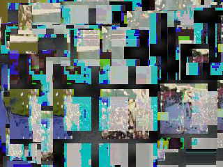
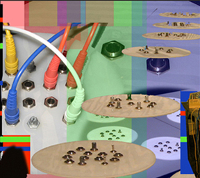

people doing strange things with electricity
The -(691/2730)th dorkbot-nyc meeting took place on Wednesday, May 3rd at 7pm at Location One in SoHo.
It featured the lovely and talented:

Dan Iglesia: Generative Processes
Three audio/video projects that use generative processes to yield unexpected results unpolluted by the human hand. "Temporide" does a pixel-by-pixel delay on a video, showing many time lapses simultaneously. Spectral splicing, morphing, and reconstitution creates new audio based out of what you feed it. And "Ghost Jockey" generates a continuous stream of mashup audio and video.
http://www.music.columbia.edu/~daniglesia

LoVid: Kiss Blink Sync Vessel
The interdisciplinary artist duo LoVid will present different permutations of their AV synthesizer Kiss Blink Sync Vessel. LoVid has been incorporating this handmade modular analog audio/video synth into sculptural instruments, installations, and media objects. LoVid will also give a short performance with their most recent wearable version of KBSV, Coat of Embrace, which allows them to break out family style while getting middle ages real old school.
http://www.ignivomous.org/projects/lovid
Jason Van Anden: Intelligent Designer
What do you get when you combine probablistic programming paradigms, computers with feelings and a room full of the gifted and talented? Artist/Technologist/Robot Maker Jason Van Anden will demonstrate IntelligentDesigner (beta) - software that enables pretty much anyone to control things in an uncontrollable way. ID was originally invented to enable improvisational behavior simulating human emotional mechanics between his life-size emotive robots Neil and Iona. In its current incarnation, ID can be used to easily create rich multilayered living music from samples, with many more esoteric applications coming down the pike. Jason hopes to get feedback of ID beta from the Dorkbot ranks and recruit some early adopters to start making things with it before its official release, next Fall.
http://www.smileproject.com
Here are some images from the meeting.